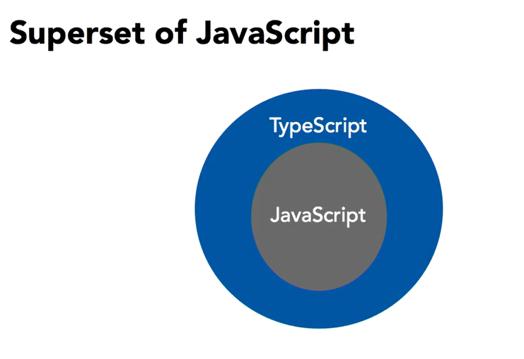

To Do Today:
-
Typescript
-
Angular
Add a CSS framework, learn about templates, data binding, events
-
Angular
2 way data-binding, generating subcomponents, filtering content
What is Typescript?
Typescript adds static typing to JS, but it's an opt-in approach
The more explicit you are about your intent, the better the type system can help you find mistakes
Typescript
https://www.typescriptlang.org
function speak(value) {
document.body.textContent = value;
}
var greeted = "World";
var greeting = "Hello, ";
var whatToSay = greeting + greeted;
speak(whatToSay);
- Change greeted and greeting to "2" and "3", then run it
- Change them again but this time to 2 and 3, then run it
- Guarantee that the value parameter will always be a string
Typescript Example #2
function totalLength(x, y) {
var total = x.length + y.lengt;
return total;
}
- Add :string to y paramater; notice y.lengt errors now
- Hover over var total
- Add :number to total; hover over total; hover over totalLength
- Try changing the fn's return type to string; what happens to return total
- Add: any[ ] to x parameter
Install typescript globally
npm i -g typescript
tsc -v
Typescript Example #2
function add(x: number, y: number): number {
return x + y;
}
console.log(add(5, 3));
function totalLength(x: any[], y: string): number {
var total: number = x.length + y.length;
return total;
}
console.log(totalLength([1, 2, 3], 'bye'));
- Create a file called sample.ts
- Copy/paste this code into sample.ts
- In terminal, type: tsc sample.ts
Angular
-
App framework
Way of structuring your code
-
AngularJS vs. Angular >= 2
-
Component Based
Create small pieces of code then connect them together. Each piece can contain its own script, template, css
-
Modular
In order to use different features of the framework, you load only the pieces you need
Angular Features
-
Data binding
How to connect your templates/views to your models/data
-
Templates
HTML (like EJS views) but with attributes. Define tags you build yourself.
-
CLI
A Command Line Interface assists with setting up your infrastructure by connecting components
Angular CLI
-
Command Line Interface
Use terminal to perform a variety of tasks such as
ng new appName -
Scaffolds an app
Creates an app with common settings quickly (similar to
express -e app) -
Common commands
ng serve -ouses webpack not nodemonng generate TYPE NAMEcan generate different pieces of angular code for you such as componentsng buildprocess your files ready for deployment
Install Angular globally
npm i -g @angular/cli
ng -v
Create new Angular app
ng new <appName>
Ready to deploy
This creates a new folder called dist which you can use to upload to a server
ng build --prod
Then run a local webserver to see it
Examine folder structure
-
src/
This folder is where you'll do most of your development
-
angular.json
What does this config file remind you of?
-
main.ts
Loads all your various modules
-
e2e
Deals with end to end testing
-
tsconfig.json, tslint.json
Config files for Typescript
Inside /src
-
app/
The main place where you'll be working. This is where components go
-
styles.css
Global stylesheet
-
assets/
Store your images and files here. .gitkeep - since normally github won't store empty folders
-
environment/
Uses the files in here to switch programming environment between from development to production
main.ts
import { enableProdMode } from '@angular/core';
import { platformBrowserDynamic } from '@angular/platform-browser-dynamic';
The first 2 imports are from libraries inside your node_modules/
Most importantly is your angular core modules which has most of the components you'll need.
main.ts
import { AppModule } from './app/app.module';
import { environment } from './environments/environment';
The next two are local imports. The first import is the default module.
The second import stores a variable called environment which helps process your files for either development
or production
main.ts
platformBrowserDynamic().bootstrapModule(AppModule)
.catch(err => console.log(err));
This loads up the module using a special method called bootstrap module to load src/app.module.ts
app.module.ts
import { BrowserModule } from '@angular/platform-browser';
import { NgModule } from '@angular/core';
import { AppComponent } from './app.component';
@NgModule({
declarations: [AppComponent],
imports: [BrowserModule, FormsModule],
providers: [],
bootstrap: [AppComponent]
})
export class AppModule {}
Contains an ES6 decorator. Notice we're using AppComponent which is from app.component.ts
app.component.ts
import { Component } from '@angular/core';
@Component({
selector: 'my-component',
templateUrl: './app.component.html',
styleUrls: ['./app.component.css']
})
export class AppComponent {
title = 'app';
}
selector defines a custom html tag where the component will be inserted (see index.html)
templateUrl is like your view/ejs file. styleUrls can contain css for this component.
Inside the export are the variables that you're passing to the html view.
Change the {{ title }}
export class AppComponent {
title = 'hello world'
}
In app.component.ts, change the exported title variable and view the change
Adding a CSS framework
"styles": [
"node_modules/bulma/css/bulma.min.css",
"src/styles.css"
],
<section class="section">
<div class="container">
<div class="columns is-mobile">
<div class="column is-half is-offset-one-quarter">
- Run: npm i --save-dev bulma
Q. why save as devDep and not Dep? - In angular.json, add to styles the path to bulma
- In app.component.html, add some bulma code, then 'ng serve' to see changes
Angular Templates
- templateUrl
- template
- ES6 template syntax
Angular Templates
@Component({
selector: 'app-root',
template: '<h1>hello world</h1>',
stylesUrl: './app.component.css'
})
- In angular.component.ts, replace templateUrl with template (if multiple lines, then use ES6 backticks)
- Go back to using templateUrl: './app.component.html'
- Copy/paste from Blackboard, Angular Component 1 into app.component.html. (keep old bulma code)
- Can delete: app.component.css, the stylesUrl line, app.component.spec.ts
Data binding in Templates
- {{ VAR }} expressions
- Directives
- constructor() method
Data Binding with :string
export class AppComponent {
query: string;
constructor() {
this.query = 'Barot';
}
}
<label class="label">For: {{ query }}</label>
- In app.component.ts, declare a new variable query
- Initialize query with a value in the constructor
- In app.component.html insert a label with the expression of query
- fyi: inside the expression can be more complex js code
Data Binding with :object
export class AppComponent {
query: string;
artists: object;
constructor() {
this.query = '';
this.artists = [ ... ]
<a class="panel-block" *ngFor="let artist of artists">
<div>
<h1><strong>{{ artist.name }}</strong></h1>
<p>{{ artist.reknown }}</p>
</div>
</a>
- In app.component.ts, declare new variable artists of type object
- In constructor, instantiate artists with artists array found on Blackboard
- Loop through the elements by placing ngFor in the anchor tag and inserting expressions for name and reknown
Angular Events
- ( eventname )
- Bind to a method
-
Pass data from template
(i.e. $event, loop variable)
Events
<a ... *ngFor="let artist of artists" (click)="showArtist(artist)">
currentArtist: object;
showArtist(artist) {
this.query = artist.name;
}
constructor() {
this.query = '';
<label class="label" *ngIf="query">
- In app.component.html, add a click event and bind it to the showArtist method
- In app.component.ts, create new showArtist() method
- Try console logging $event, then artist; the label should change upon click events
- In app.component.html, for the label tag, add *ngIf="query" so it only shows conditionally. Initialize query with empty string
2 Way Data Binding
- [( ngModel )] used for input fields
- [( ngControl )] used for non-input fields
- Need to import additional imports
ngModel: 2 way binding
<input ... [(ngModel)]="query">
import { BrowserModule } from '@angular/platform-browser';
import { NgModule } from '@angular/core';
import { FormsModule } from '@angular/forms';
@NgModule({
declarations: ...
imports: [BrowserModule, FormsModule],
- In app.component.html, add ngModel to the input field, but if you run it there's an error
- In app.module.ts, import FormsModule
- Also add it to the list of NgModule imports
Generate Components | pipes
- Generate with CLI
- transform(pipe, pipeModifier)
- You can generate pipes, components, etc via 'npm generate pipe component-name'
Generate pipes | filter
export class SearchArtistsPipe implements PipeTransform {
transform(pipeData, pipeModifier): any {
return pipeData.filter(eachItem =>
eachItem['name']
.toLowerCase()
.includes(pipeModifier.toLowerCase())
);
}
}
<a ... *ngFor="let artist of (artists | searchArtists : query)" ...
- Run: ng generate pipe search-artists
Notice the new files generated (can delete the test file)
Notice app.module.ts auto-updated - In search-artists.pipe.ts, change the transform to filter items (google MDN filter)
- In app.component.html, use the pipe
Adding subcomponent
- Generate with CLI
- ng generate component component-name
Generate subcomponent
<app-artist-details *ngIf="currentArtist" [artist]="currentArtist"></app-artist-details>
export class AppComponent {
...
currentArtist: object;
showArtist(artist) {
this.currentArtist = artist;
@Component({
...
inputs: ['artist']
})
- Run: ng generate component artist-details (can delete css, test, styleUrl)
- In app.component.html, before the ending nav tag, insert app-artist-details tag
- In app.component.ts, declare currentArtist
- In showArtist(), set currentArtist to whatever was passed in
- In artist-details.component.ts, add inputs
- Make list appear if query exists; add *ngIf="query" to div tag wrapper around anchor. Within the click event, add a semicolon; query=' '
References
- Lynda.com - Typescript Essential Training